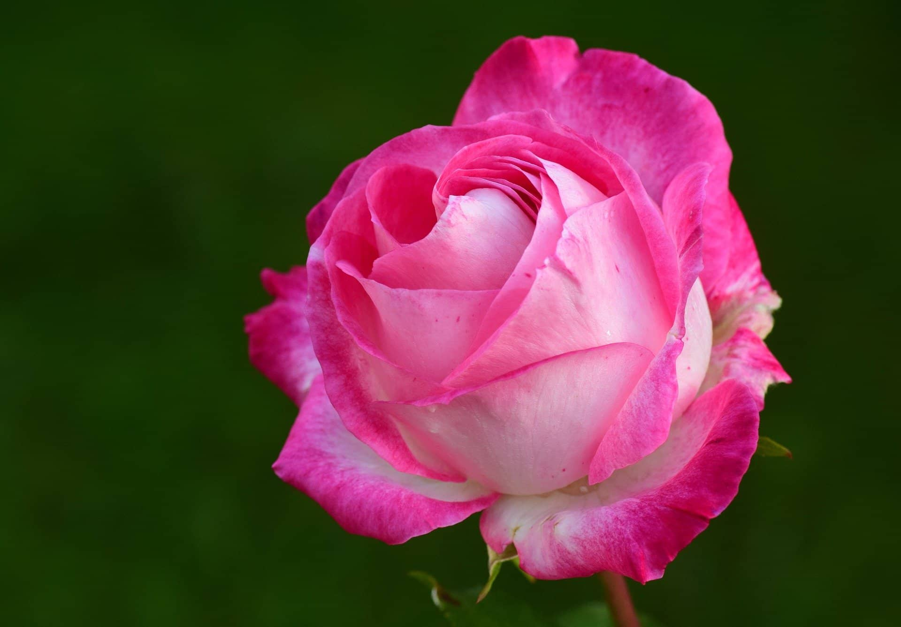
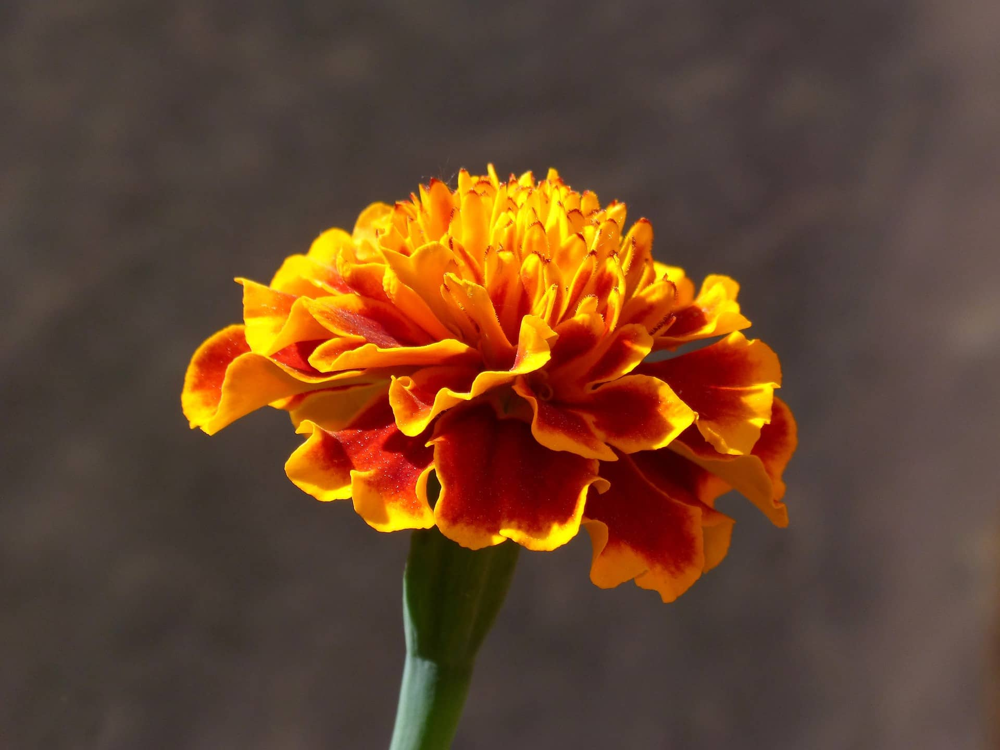
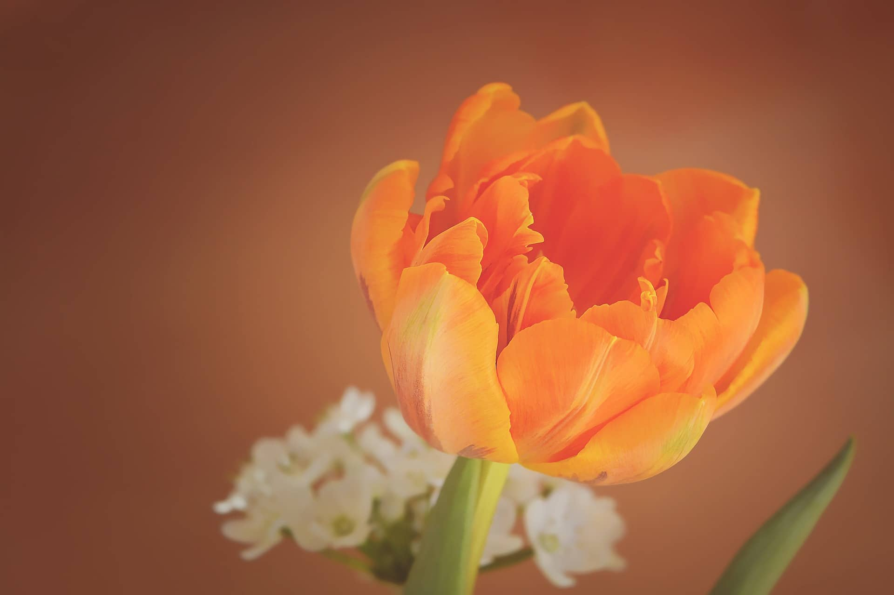
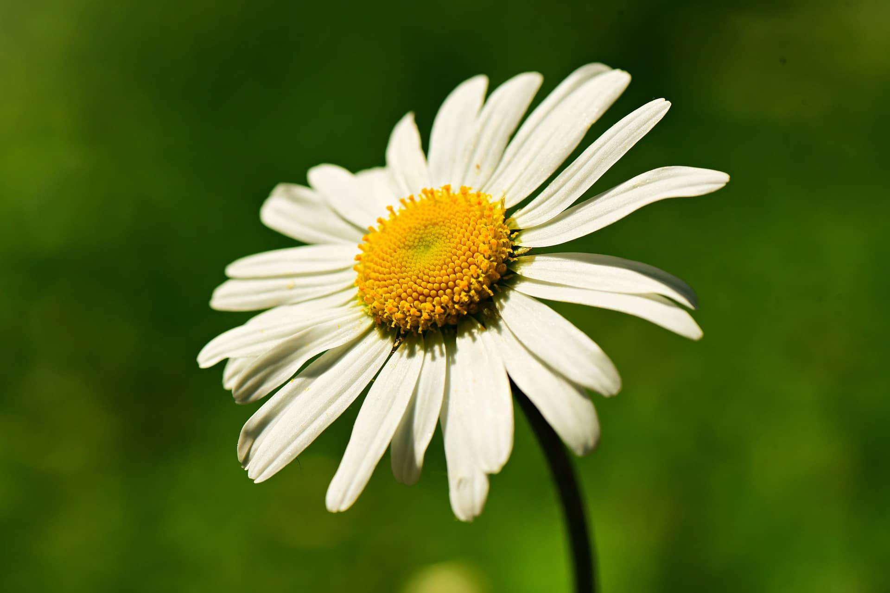
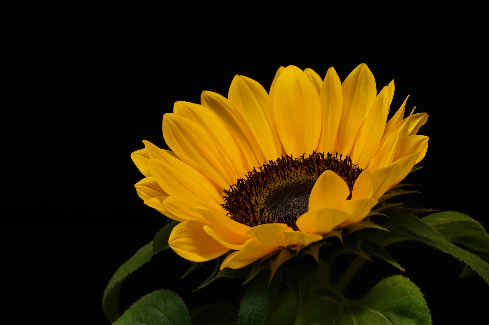
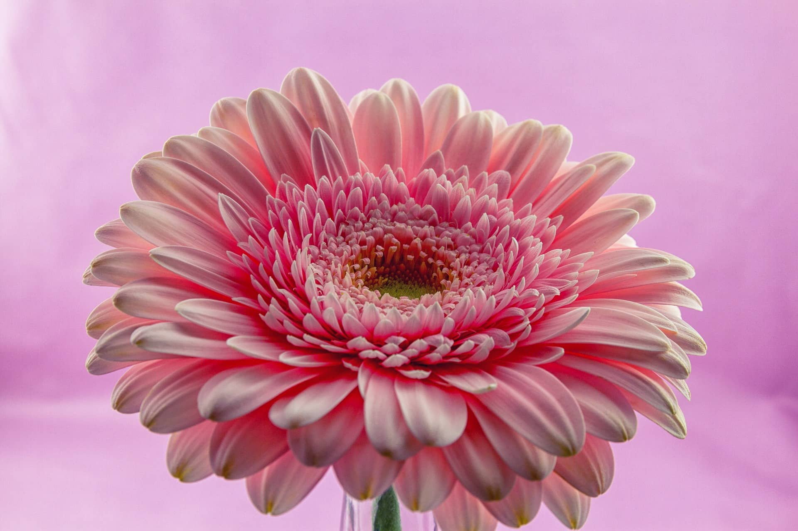
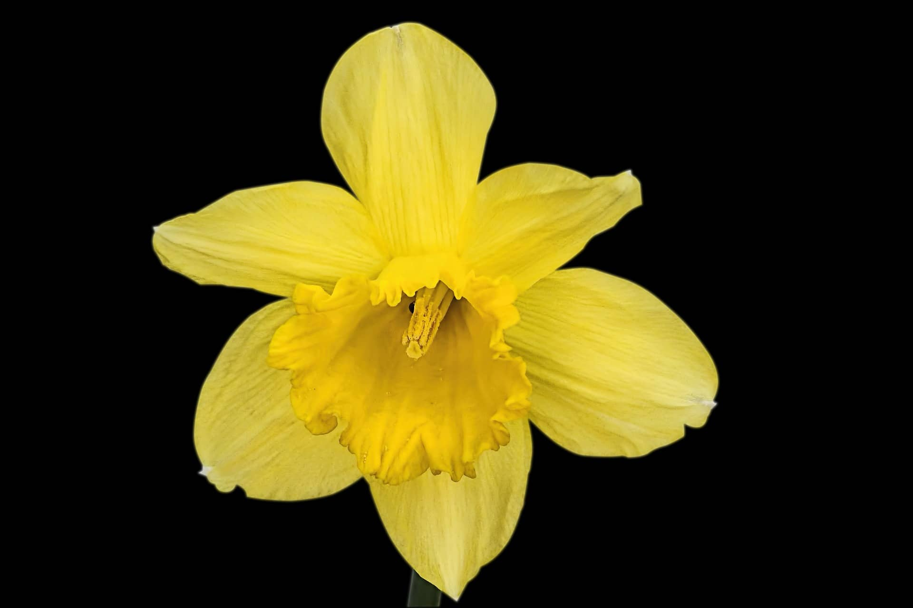
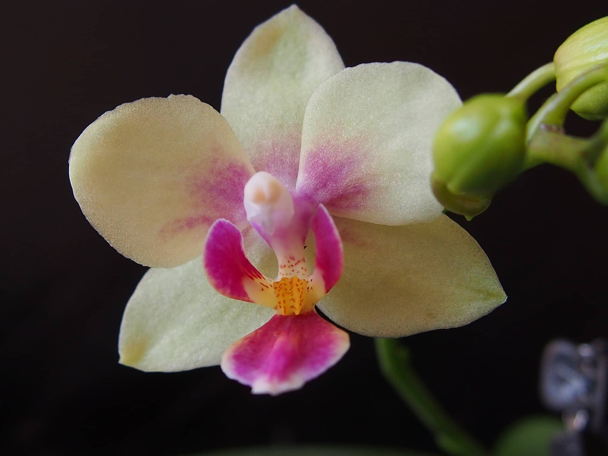

|  |
RosaNaturais de vermelho e branco, hoje é possível encontrar rosas em diversos tipos de combinações de cores, incluindo azul e preto, por exemplo. |
|  |
CravoOs cravos datam de mais de 2.000 anos. Eles são ricos em mitologia, simbolismo e até debate, principalmente por causa do nome. Alguns dizem que vem da Grécia Antiga, enquanto outros argumentam que é derivado de carnis, uma palavra latina que significa carne. |
|  |
TulipaAs tulipas tornaram-se populares no século XVII quando começaram a invadir a Europa, em particular a Holanda. Essas encantadoras flores em forma de sino desencadearam uma tendência conhecida como “tulipomania”. |
|  |
MargaridaEmbora tenham o design mais simples, as margaridas são flores incrivelmente bonitas. Elas transmitem muita exuberância e alegria. É um dos mais comuns tipos de flores para jardim. |
|  |
GirassolTambém conhecido como Helianthus, o girassol é uma das flores mais marcantes do mundo. Seu nome vem das palavras gregas helios, que significa sol, e anthos, que significa flor. |
|  |
GerberaEsse tipo de flor faz parte da família do girassol, simbolizando sinceridade e castidade. Elas estão disponíveis em uma riqueza de cores, sendo um dos mais comuns tipos de flores para decoração. |
|  |
NarcisoNarcisos são flores excepcionais que simbolizam a amizade. Apresentando uma estrutura em forma de trompete colocada contra um fundo na forma de uma estrela, narcisos têm cor amarelo profundo. |
|  |
OrquídeaA orquídea é uma das flores mais graciosas do mundo. É uma planta ornamental disponível em belos tons de rosa, branco, roxo, vermelho púrpura e muitas outras. |